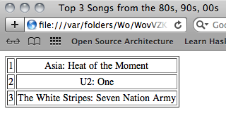

8.0.0.10
Интермеццо 2: Цитата(Quote), Отмена цитаты(Unquote)
Списки играют важную роль в нашей книге, а также в Racket, в основы
наших языков обучения.
Обязательно установите уровень вашего языка на BSL+ или выше.
При разработке программ очень важно понимать, как строятся списки, исходя из
первых принципов; он информирует о создании наших программ. Однако рутинная(повседневная)
работа со списками требует компактной записи, для функции list, представленной в Функция list.
С конца 1950-х годов языки в стиле Lisp поставляются с еще более мощной парой
инструментов для создания списков: цитированием и антицитированием. Многие языки
программирования теперь поддерживают их, и язык разработки веб-страниц PHP внедрил
эту идею в коммерческий мир.
Это интермеццо дает вам представление о механизме цитирования. Он также вводит
symbols(символы), форму данных, которая тесно связана с цитатой.
Хотя это введение носит неформальный характер и использует упрощенные примеры, остальная
часть книги иллюстрирует силу идеи с помощью почти реалистичных вариантов. Вернитесь к
этому интермеццо, если какой-либо из этих примеров доставит вам проблемы.
Цитата(Quote)
Quotation(Цитирование) - это механизм сокращенной
записи, позволяющий легко создать большой список. Грубо говоря, список, построенный с
помощью функции list, можно построить еще более кратко,
заключив списки в кавычки. И наоборот, цитируемый список сокращает конструкцию с
list.
Технически
quote(цитата) - это ключевое слово для составного предложения
в духе
Интермеццо 1: Язык для начинающих студентов,
и она используется следующим образом:
(quote (1 2 3)). DrRacket переводит это выражение в
(list 1 2 3).
Здесь вы можете задаться вопросом, почему мы называем
quote(цитату)
аббревиатурой, поскольку цитируемое выражение выглядит более сложным, чем его перевод/преобразование. Ключ в том, что
', это короткое обозначение для
quote. Вот несколько коротких примеров:
| > '(1 2 3) |
|
(list 1 2 3)
|
| > '("a" "b" "c") |
|
(list "a" "b" "c")
|
| > '(#true "hello world" 42) |
|
(list #true "hello world" 42)
|
Как видите, использование
' создает обещанные списки. Если вы забыли, что означает
(list 1 2 3),
перечитайте раздел
Функция list ; он объясняет, что
этот list(список) является сокращением для
(cons 1 (cons 2 (cons 3 '()))).
Пока что
quote выглядит как небольшое улучшение
по сравнению с
list, но посмотрите:
| > '(("a" 1) | | ("b" 2) | | ("d" 4)) |
|
|
(list (list "a" 1) (list "b" 2) (list "d" 4))
|
С помощью ' мы можем создавать списки, а также вложенные списки.
Чтобы понять, как работает
quote(цитата),
представьте ее как функцию, которая пересекает(обходит все подформы) заданную форму.
Когда
' встречает простой фрагмент данных - число, строку, логическое
значение или изображение - она исчезает(т.е ни на что не влияет). Но когда она находится перед
открытой круглой скобкой -
(, она вставляет
list справа от круглой скобки и ставит
' на все элементы между
( и закрывающей скобкой -
). Например,
| '(1 2 3) |
|
это сокращение от
|
| (list '1 '2 '3) |
Как вы уже знаете, ' исчезает из чисел, так что остальное легко.
Вот пример создания вложенных списков:
| '(("a" 1) 3) |
|
это сокращение для
|
| (list '("a" 1) '3) |
Чтобы продолжить этот пример, мы расширим аббревиатуру в первой позиции:
| (list '("a" 1) '3) |
|
это сокращение от
|
| (list (list '"a" '1) 3) |
Мы предоставляем вам завершить этот пример.
Упражнение 231. Исключите
quote(цитату) в пользу
list из следующих выражений:
Теперь исключите
list в пользу
cons там, где
это необходимо.
Квазицитата(Quasiquote) и Отмена Цитирования(Unquote)
Предыдущий раздел должен убедить вас в преимуществах ' и
quote. Вы даже можете задаться вопросом, почему в книге
quote(цитата) представлена только сейчас, а не с самого начала.
Кажется, она значительно облегчает формулировку тестовых примеров, которые включают списки,
а также для отслеживания больших наборов данных. Но все хорошее сопровождается сюрпризами,
включая и quote.
Когда дело доходит до разработки программ, новичков вводят в заблуждение, когда они думают,
что списки - это quote(цитируемые) или даже построенные с помощью
list значения. Построение списков с помощью
cons гораздо более наглядно для пошагового
создания программ, чем сокращения, такие как quote, которые
скрывают основную конструкцию. Так что не забывайте думать о cons всякий раз, когда вы застряли при разработке функции обработки
списков.
Итак, перейдем к фактическим сюрпризам, скрытым за
quote. Предположим, ваша область определений содержит одно
определение константы:
Представьте, что вы запускаете эту программу
и экспериментируете с
в области взаимодействия. Какого результата вы
ожидаете? Стоп! Попробуйте применить приведенные выше правила для
' для данного примера.
Вот эксперимент
| > '(40 41 x 43 44) |
|
(list 40 41 'x 43 44)
|
На этом этапе важно
помнить, что DrRacket отображает значения. Всё в списке - это значения, включая
'x. Это значение, которое вы никогда
раньше не видели, а именно
Symbol(Символ). Для наших целей символ выглядит как имя переменной, за исключением того, что
он начинается с
' и что
сам символ
является значением. Переменные обозначают только значения; они не являются значениями
сами по себе. Symbols(Символы) играют роль, аналогичную strings(строкам); они являются
отличным способом представления символической информации в виде данных. Как это сделать
показывает раздел
Взаимосвязанные данные;
пока мы просто принимаем символы как еще одну форму данных.
Чтобы понять идею символов, рассмотрим второй пример:
Вы можете ожидать, что это выражение построит
(list 1 2 3). Однако если
вы воспользуетесь правилами расширения для
', вы обнаружите, что
| '(1 (+ 1 1) 3) |
|
это сокращение от
|
| (list '1 '(+ 1 1) '3) |
И ' во втором пункте в этом списке
не исчезает. Вместо этого она является сокращением для создания другого списка, так что
весь пример выглядит как
Это означает, что
'+ - это такой же символ, как
'x. Так же, как последний не связан с переменной
x, первый не имеет непосредственного отношения к функции
+, которая идет с BSL+. Опять же, вы должны
представить, что
'+ может служить
элегантным
представлением данных функции
+ так же, как
'(+ 1 1) может служить
представлением данных
(+ 1 1). Раздел
Взаимосвязанные Данные подхватывает эту идею.
В некоторых случаях вы не хотите создавать вложенный список. На самом деле вам нужно
настоящее выражение в цитируемом(quoted) списке, и вы хотите вычислить выражение
во время построения списка. В таких случаях вам надо использовать
quasiquote(квазицитирование), которое, как и
quote(цитата), является просто ключевым словом для составного
предложения: (quasiquote (1 2 3)). И, как и в случае с quote, quasiquote имеет сокращение, а именно символьный
знак `, который является “другим” клавиатурным значением для
одинарной кавычки на вашей клавиатуре.
На первый взгляд, ` действует точно так же, как
' в том, что он создает списки:
| > `(1 2 3) |
|
(list 1 2 3)
|
| > `("a" "b" "c") |
|
(list "a" "b" "c")
|
| > `(#true "hello world" 42) |
|
(list #true "hello world" 42)
|
Самое приятное в
` то, что он также позволяет использовать
unquote для отмены цитирования, то есть вы можете
потребовать возврата к собственно языку программирования внутри
quasiquote(квазицитируемого) списка.
Проиллюстрируем эту идею на приведенных выше примерах:
| > `(40 41 ,x 43 44) |
|
(list 40 41 42 43 44)
|
| > `(1 ,(+ 1 1) 3) |
|
(list 1 2 3)
|
Как и выше, первое
взаимодействие предполагает область определений, которая содержит
(define x 42). Лучший способ
понять этот синтаксис - увидеть его с реальными ключевыми словами вместо их сокращений
` и
,:
Правила раскрытия квазиквотированных(
quasiquoted) и
unquoted фигур - это правила
quote, дополненные
одним правилом. Когда перед круглой скобкой стоит знак
`,
он распределяется по всем частям между ним и соответствующей закрывающей круглой скобкой.
Когда он появляется рядом с базовыми частями данных, он исчезает. Когда он стоит перед именем
переменной, вы получаете символ. И новое правило заключается в том, что если сразу за
` следует
unquote(отмена
кавычки), оба символьных знака(character) исчезают:
| `(1 ,(+ 1 1) 3) |
|
это сокращение от
|
| (list `1 `,(+ 1 1) `3) |
и
| (list `1 `,(+ 1 1) `3) |
|
это сокращение от
|
| (list 1 (+ 1 1) 3) |
И вот как вы получаете
(list 1 2 3) как показано выше.
Отсюда небольшой шаг до создания веб-страниц. Да, вы правильно читаете -
веб-страницы! В принципе, веб-страницы написаны на языках программирования
HTML и CSS. Но никто не записывает программы HTML напрямую; вместо этого люди
создают программы, которые создают веб-страницы. Неудивительно, что вы также
можете писать такие функции на BSL+, и на рисунке 83
представлен упрощенный пример. Как вы сразу видите, эта функция использует две
строки и создает глубоко вложенный список - представление данных веб-страницы.
| ; String String -> ... deeply nested list ... |
| ; produces a web page with given author and title |
| (define (my-first-web-page author title) |
| `(html |
| (head |
| (title ,title) |
| (meta ((http-equiv "content-type") |
| (content "text-html")))) |
| (body |
| (h1 ,title) |
| (p "I, " ,author ", made this page.")))) |
Рисунок 83: Упрощенный генератор HTML
Повторный взгляд также показывает, что параметр title(заголовка)
дважды появляется в теле функции: один раз вложен во вложенный список с меткой
'head и один раз во вложенном списке
с меткой 'body. Другой параметр
появляется только один раз. Мы считаем вложенный список шаблоном страницы, а параметры -
это дыры в шаблоне, которые нужно заполнить полезными значениями. Как вы понимаете,
этот шаблонный стиль создания веб-страниц наиболее полезен, когда вы хотите создать
много похожих страниц для сайта.
|
Представление вложенного списка
|
|
Код веб-страницы (HTML)
|
| '(html | | (head | | (title "Hello World") | | | | | | (meta | | ((http-equiv "content-type") | | (content "text-html")))) | | | | (body | | (h1 "Hello World") | | | | | | (p "I, " | | "Matthias" | | ", made this page."))) |
|
| |
<html>
| |
<head>
| |
<title>
| |
Hello World
| |
</title>
| |
<meta
| |
http-equiv="content-type"
| |
content="text-html" />
| |
</head>
| |
<body>
| |
<h1>
| |
Hello World
| |
</h1>
| |
<p>
| |
I,
| |
Matthias,
| |
made this page.
| |
</p>
| |
</body>
| |
</html>
|
|
Рисунок 84: Представление данных на основе вложенных списков
Чтобы понять, как работает эта функция, мы поэкспериментируем
в области взаимодействия DrRacket. Передавая свои знания в область
quasiquote(квазицитатирования) и
unquote(отмены цитирования), вы должны уметь предсказать,
каким будет результат
(my-first-web-page "Matthias" "Hello World")
Опять же, DrRacket настолько быстр, что лучше
показать вам результат: см. Левый столбец на
рисунке 84.
Вы можете использовать команду show-in-browser из библиотеки
web-io.rkt , чтобы отобразить результат в веб-браузере.
Правый столбец таблицы содержит эквивалентный код в HTML. Если бы вы открыли эту веб-страницу
в браузере, вы бы увидели что-то вроде этого:
Обратите внимание, что
"Hello World" снова появляется дважды: один раз в строке заголовка
веб-браузера - что обусловлено спецификацией <title> -
и один раз в тексте веб-страницы.
Если бы это был 1993 год, теперь вы могли бы продавать вышеуказанную функцию
как компанию Dot Com, которая генерирует первую веб-страницу людей с помощью простого
вызова функции. Увы, в наши дни это всего лишь упражнение.
Упражнение 232. Удалите
quasiquote
и
unquote из следующих выражений, чтобы вместо них они записывались
с помощью
list:
Также запишите вложенные списки, которые производят
выражения.
Встраиваемая/сращиваемая Отмена цитаты(Unquote Splice)
Когда
quasiquote встречается с
unquote во время расширения сокращений, эти двое аннигилируют
друг друга:
| `(tr | | ,(make-row | | '(3 4 5))) |
|
|
это сокращение от
|
| |
Таким образом, все, что производит make-row, становится вторым
элементом списка. В частности, если make-row создает список,
этот список становится вторым элементом списка. Если make-row
переводит заданный список чисел в список строк, то результатом будет
Однако в некоторых случаях нам может потребоваться
вшить/встроить такой вложенный список во внешний, чтобы в нашем текущем примере мы получили
Один из способов решить эту небольшую проблему - вернуться к
cons. То есть смешивать
cons с
quote,
quasiquote и
unquote.
В конце концов, все эти символьные знаки - всего лишь сокращения для
consed(конструируемых) списков. Вот что нужно для получения
желаемого результата в нашем примере:
(cons 'tr (make-row '(3 4 5)))
Убедитесь, что результат
(list 'tr "3" "4" "5").
Поскольку на практике такая ситуация встречается довольно часто,
BSL+ поддерживает еще один сокращенный механизм для создания списка:
,@, также известный в виде ключевого слова
unquote-splicing(отмена цитирования с встраиванием результата). С помощью этой формы легко встроить
вложенный список в окружающий список. Например,
`(tr ,@(make-row '(3 4 5)))
преобразуется в
(cons 'tr (make-row '(3 4 5)))
что как раз то, что нам нужно для нашего примера.
Теперь рассмотрим проблему создания таблицы HTML в нашем
представлении вложенного списка. Вот таблица из двух строк по четыре ячейки в каждой:
| '(table ((border "1")) |
| (tr (td "1") (td "2") (td "3") (td "4")) |
| (tr (td "2.8") (td "-1.1") (td "3.4") (td "1.3"))) |
Первые вложенные списки предписывают HTML
нарисовать тонкую рамку вокруг каждой ячейки в таблице; два других вложенных списка
представляют собой строку, каждый.
На практике вам необходимо создать такие таблицы с произвольно
широкими строками и произвольным количеством строк. А пока мы имеем дело с первой проблемой,
для которой требуется функция, переводящая списки чисел в строки HTML:
Вместо добавления примеров мы исследуем поведение этих функций в области взаимодействия
DrRacket:
| > (make-cell 2) |
|
(list 'td "2")
|
| > (make-row '(1 2)) |
|
(list (list 'td "1") (list 'td "2"))
|
Эти взаимодействия
показывают создание списков, представляющих ячейку и строку.
Чтобы превратить такие списки строк в фактические строки
представления таблицы HTML, нам нужно объединить их в список, который начинается с
'tr:
| ; List-of-numbers List-of-numbers -> ... nested list ... |
| ; creates an HTML table from two lists of numbers |
| (define (make-table row1 row2) |
| `(table ((border "1")) |
| (tr ,@(make-row row1)) |
| (tr ,@(make-row row2)))) |
Эта функция использует два списка чисел и создает представление таблицы HTML. С помощью
make-row она переводит списки в списки представлений ячеек.
С ,@ эти списки объединяются в шаблон таблицы:
| > (make-table '(1 2 3 4 5) '(3.5 2.8 -1.1 3.4 1.3)) |
|
(list 'table (list (list 'border "1")) '....)
|
Это
Точки не являются частью вывода.
применение make-table предлагает еще одну причину, по которой
люди пишут программы для создания веб-страниц, а не создают их вручную.
Упражнение 233. Разработайте альтернативы следующим
выражениям, которые используют только
list и дают
те же значения:
Упражнение 234. Создайте функцию
make-ranking, которая использует список ранжированных названий
песен и создает представление списка в виде таблицы HTML.
Рассмотрим этот пример:
| (define one-list |
| '("Asia: Heat of the Moment" |
| "U2: One" |
| "The White Stripes: Seven Nation Army")) |
Если вы примените
make-ranking к
one-list и отобразите
полученную веб-страницу в браузере, вы увидите что-то вроде снимка экрана на
рисунке 85.

Рисунок 85: Веб-страница, созданная с помощью BSL+
Подсказка Хотя вы могли бы
разработать функцию, которая определяет ранжирование из списка строк, мы хотим, чтобы вы
вместо этого сосредоточились на создании таблиц. Таким образом, мы предоставляем следующие
функции:
Прежде чем использовать эти функции, снабдите их сигнатурами и предназначениями.
Затем изучите их работу с взаимодействиями в DrRacket.
Аккумуляторы расширяют рецепт разработки за счет создания более простых
функций для вычисления рейтингов, чем
ranking и
add-ranks.